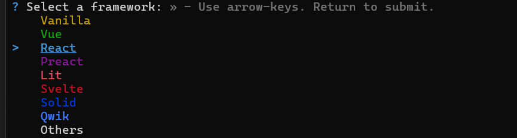

Vite é uma ferramenta de build e desenvolvimento frontend moderna, criada para proporcionar um desenvolvimento mais rápido e eficiente de aplicações web. Seu nome vem da palavra francesa "vite", que significa "rápido".
Este link nos manda direto para o passo a passo: Clique aqui
Seja ele o CMD, o PowerShell, ou mesmo o terminal integrado do VsCode
~Vamos usar o PowerShell~
npm create vite@latest
Após passar pelo passo 2, o prompt de comando irá pedir o nome do projeto:
No nossp caso é "firstProjectsVite"

Usaremos as setas do teclado e o enter para selecionar o react
No caso javaScript
usaremso o comando cd firstProjectsVite
Usaremos o comando npm i
npm run dev
Para rodar o nosso código